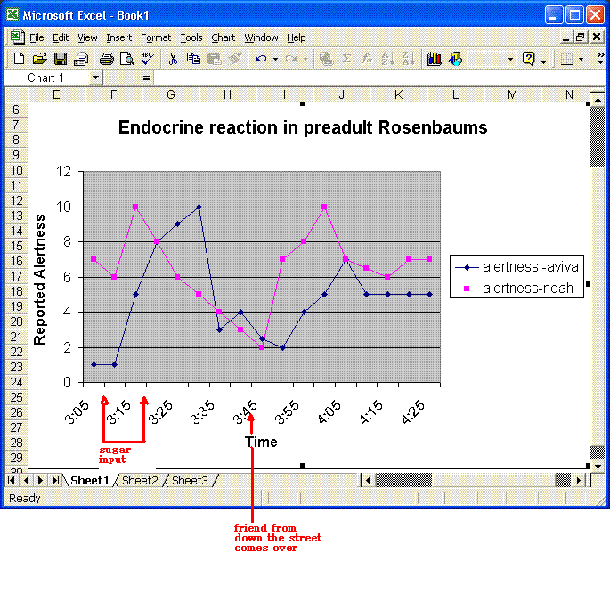

|
|
An Empirical Study
It was three o clock, and Aviva was in Room Time (her obligatory hour of meditation, study, and making bead necklaces). Noah was in Room Time too.
Aviva came out and asked for candy. "I'm so sleepy," she said. "I can't concentrate. Can I have some candy to wake up?"
"Aviva," I said, "you haven't eaten anything since lunch. You realize that if you eat sugar, it only actually raises your blood sugar for a few minutes. After that, your pancreas releases all this insulin, and that makes your body suck all the blood sugar out of your blood. So you'll end up more tired than you were before."
Aviva looked skeptical.
"Do you want to try it?" I asked.
"Yeah!"
So we did....

A dose of candy (Hershey's kisses, mini-snickers, mini-kitkats, and a lollipop, left over from Halloween) was administered to both subjects from 3:10 to 3:20. Energy level readings were taken at five-minute intervals by asking the subjects to rate themselves on a scale of one to ten. The initial readings were 1 (Aviva) and 7 (Noah).
As predicted, shortly thereafter Aviva was jumping around the room, twitching and unable to sit still. At 3:30 she was unable to stay in the house and ran off to the backyard to "get the energy out". At 3:35 the head researcher visited the backyard to take another reading, and found this subject collapsed on a tree branch, too tired to move, although once helped to the ground she regained a degree of vigor and announced her energy level to be 3.
Shortly thereafter a friend from down the street arrived, which may account for the subsequent recovery and stabilization of energy levels.
Though I had the sense during the experiment that Noah was just saying whatever numbers came into his head, the data actually shows roughly the same curve as Aviva, but with quicker response to excitational stimuli (sugar and vistors) as well as quicker exhaustion of the effects of these stimuli.
In the case of sugar, this could be accounted for my a smaller bloodstream. But note that also after the visitor arrives, Noah zips up to energy level 7 almost instantly, reaching 10 shortly thereafter, while Aviva takes substantially longer.
(My hypothesis is that, in addition to shorter endocrine pathways, the culprit here is language -- as people get older and more verbal, the fact that they are constantly internally telling themselves the ongoing story of their lives creates an emotional intertia. That kids get over slights almost instantly while adults hold grudges has, I suspect, a lot to do with prefrontal lobe activity, specifically self-narrativizing.)
Note that contrary to hypothesis, the fabled "sugar crash" did not bring the primary subject to a lower energy level than before the "sugar rush". I initially attributed this to the fact that doing an experiment is more stimulating than Room Time, but after consulting with our doctor friend Terri I learned that the whole "your blood sugar levels will go LOWER if you eat sugar!" is actually not borne out by any experiments. It is just something parents tell their kids so they won't eat candy.
Nonetheless, given the significantly greater durability of the excitational influence of the second-introduced stimulus, the conclusion of this experiment was agreed by all to be that "friends are better than candy".
...after consulting with our doctor friend Terri I learned that the whole "your blood sugar levels will go LOWER if you eat sugar!" is actually not borne out by any experiments. It is just something parents tell their kids so they won't eat candy.
This sounds like something they should check on Mythbusters. :-)
Posted by: Steve Nagy at December 29, 2006 12:42 PMHeck, this sounds like an ACTUAL EPISODE of Mythbusters, done live in the Rosenbaums' backyard. (Though I must admit to being somewhat more convinced of the conclusions than than is typical for the average Mythbusters experiment.)
Posted by: Jackie M. at January 2, 2007 12:57 AM